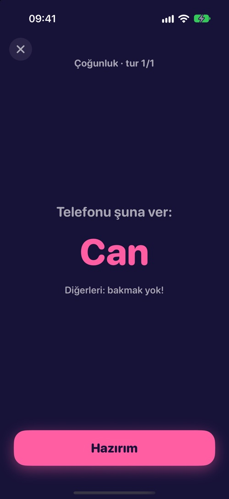

Üç oyun şekli
Tek telefon ya da herkesinki.
- 1Tek başına: kendi rekorunu kır, istediğin zaman.
- 2Telefonu pasla: tek iPhone, sırayla. 4 kişiye kadar ücretsiz, Parti Paketi ile 8 kişi.
- 3Online oda: herkes 4 harfli kodla ya da davet bağlantısıyla katılır, aynı anda oynar. 4 kişiye kadar ücretsiz, Parti Paketi ile 12 kişi.
Her telefon aynı turu ortak bir tohumdan birebir aynı üretir; kimseye daha kolay soru düşmez.

87 mini oyun
Öğrenmesi kolay. Ustalaşması zor.
Refleks düelloları, renk tuzağı, göz yanılmaları, tahminler, dünya haritası, bilardo ve kule fiziği, hafıza testleri, ritim ve ses oyunları, küçük dedektiflik vakaları ve telefonun kendisini kullanan oyunlar: eğ, üfle, titreşimleri say. Her tur birkaç saniye sürer.
Grup oyunları
Masayı oku.
Bazı oyunlar tüm masaya göre puanlanır: çoğunluğun seçeceğini seç, kimsenin seçmediği en küçük sayıyı bul ya da grubun frekansını yakala.
Günlük meydan okuma
Beş oyun. Herkese aynı. Her gün.
Her gün yeni bir beş oyunluk meydan okuma, tek hak. Serini büyüt, puanını Game Center sıralamasında karşılaştır.
Adil tasarım.
Süre senin telefonunda ölçülür; yavaş bağlantı sana puan kaybettirmez. Parti ortasında reklam yok, izleme yok, hesap gerekmez.
Destek
Bir hata buldun, bir oyun fikrin ya da sorun mu var? hyapps@outlook.com adresine yaz.
Kaç kişi oynayabilir?
Tek başına ya da tek telefonu dolaştırarak veya online odada 4 kişiye kadar ücretsiz. Parti Paketi ile tek telefonda 8, online odada 12 kişiye kadar. Grup oyunları (Çoğunluk, En Küçük Tek, Üçte İki, Aynı Frekans) en az 3 oyuncu ister.
Ücretsiz mi?
Tek başına 87 oyunun hepsi ücretsiz; günlük meydan okuma ve istatistikler de. Arkadaşlarla her hafta 25 oyun ücretsiz (12 sevilen oyun ve her pazartesi değişen 13 oyun), 4 kişiye kadar ve istediğin kadar maç. Reklam ve abonelik yok. Parti Paketi tek seferlik bir satın alma: arkadaşlarla 87 oyunun hepsini, tek telefonda 8, online odada 12 kişiyi açar. Odada ev sahibinin paketi yeterli. Aile Paylaşımı açık.
Herkesin uygulamayı indirmesi gerekiyor mu?
Telefonu pasla modunda yalnız bir telefon yeter. Online odada herkes kendi telefonunda oynadığı için herkeste Kıvrak Zeka olmalı.
İnternet gerekiyor mu?
Tek başına, telefonu pasla ve günlük meydan okuma internetsiz çalışır; yalnız Haritada Bul haritayı yüklemek için internet ister. Online oda bağlantı gerektirir.
Online odada telefonum düşerse ne olur?
Uygulamayı açıp aynı kodla katıl: yerin geri gelir ve kaldığın turdan devam edersin. Ev sahibi beklemeden devam etmeyi de seçebilir.
Günlük meydan okuma ne zaman değişir?
Her gün 07:00 UTC'de (Türkiye saatiyle 10:00), her yerde aynı anda; böylece herkes aynı beş oyunu ve turları oynar, sıralama tek.
Rehberler
HY Apps'in diğer uygulamaları